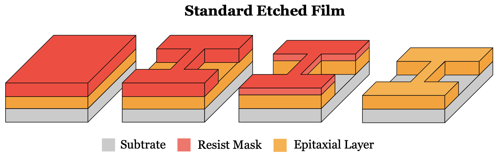
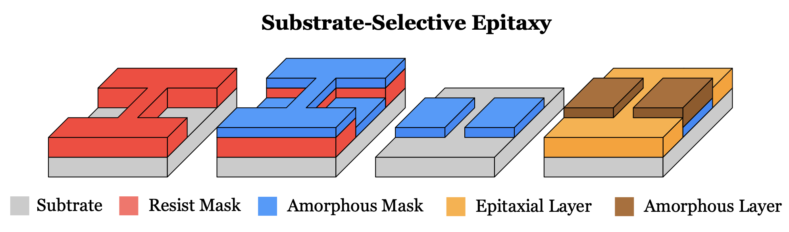
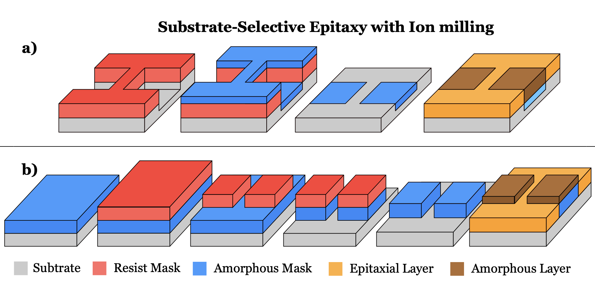

Process Integration • Thin-Film Growth • Superconducting Devices
Substrate-Selective Epitaxy
A process-integration strategy for fabricating patterned superconducting oxide devices while minimizing direct post-growth processing of the functional epitaxial layer.
The Fabrication Challenge
What if the functional film could be grown last?
Conventional thin-film device fabrication typically begins with deposition of the functional material. Lithography and pattern transfer are then performed directly on the film to define the final device.
For structurally and chemically sensitive epitaxial materials, however, this sequence introduces an important process-integration challenge. The functional layer can be exposed to photoresist processing, developers, wet chemistry, energetic ion bombardment, and heating during pattern transfer.

Process-integration question. Instead of optimizing every post-growth fabrication step to reduce its effect on a sensitive functional material, can the process sequence itself be redesigned so that the epitaxial layer is introduced only after the device geometry has already been defined?
The Process Strategy
Pattern the substrate first. Grow the functional layer last.
Substrate-selective epitaxy reverses the conventional fabrication sequence. Rather than patterning the functional epitaxial film after growth, selected regions of the substrate are first covered with an amorphous mask.
During the final deposition, the crystalline substrate remains available in the regions where epitaxial growth is desired, while the amorphous regions inhibit conventional epitaxial growth. The functional superconducting layer is therefore deposited after the earlier lithography and pattern-definition steps.

Process Architecture
The difference is the order of operations
Conventional fabrication
Grow the functional epitaxial film first, then use lithography and material removal to define the device. The active material therefore experiences the post-growth fabrication sequence.
Substrate-selective epitaxy
Define the growth-selective geometry before deposition. The superconducting epitaxial layer is introduced near the end of the process, reducing direct post-growth processing of the functional material.
The key innovation is therefore not simply a different lithography step or etch chemistry. It is a change in process architecture: fabrication steps are reordered around the sensitivity of the functional material.
Integration Routes
Trench and ridge implementations
The substrate-selective approach can be implemented through different process sequences depending on the desired surface geometry and integration requirements.
Trench approach
In the trench-type route, photolithography is performed directly on the substrate. A thin amorphous layer is then deposited and lift-off leaves the mask only in selected regions. The superconducting epitaxial layer is subsequently grown in the final deposition step.
This route avoids the need to ion-mill the superconducting layer after epitaxial growth.
Ridge approach
Alternative integration sequences use controlled ion milling before growth of the superconducting layer. The milling step can be applied either to the patterned substrate before amorphous-mask deposition or to a pre-deposited amorphous layer in order to expose selected regions of the crystalline substrate.
When longer milling was required, sample cooling could be used to limit process heating. The goal remained the same: complete the potentially damaging pattern-definition steps before deposition of the functional epitaxial material.

Process-integration principle. The individual unit processes can change, but the integration strategy remains consistent: establish the patterned growth template first and protect the functional superconducting film from unnecessary post-growth processing.
Process Flow
Integrating lithography, deposition and selective growth
In my PCCO device work, this process combined photolithography, amorphous-mask deposition, pattern definition, and pulsed-laser deposition to create patterned superconducting structures suitable for electrical transport measurements.
From Process to Device
Implementing SSE in a Hall-bar geometry
One important implementation of the process was a six-contact Hall-bar structure designed for simultaneous longitudinal and transverse transport measurements.
Large contact pads connect to a narrower central channel. Current is driven through the device while separate voltage contacts provide access to the longitudinal voltage Vxx and transverse Hall voltage Vyx.

This geometry made it possible to evaluate whether changing the fabrication architecture preserved the electrical properties required for quantitative low-temperature transport experiments.
Connection to my transport research. SSE-fabricated Hall structures formed part of my broader work on transport in electron-doped PCCO thin films. The Hall-device fabrication and magnetotransport methodology are discussed separately in the Hall Transport project →
Primary Materials Platform
PCCO superconducting thin films
My primary application of the substrate-selective process was the fabrication of devices based on the electron-doped cuprate superconductor Pr2−xCexCuO4±δ (PCCO).
PCCO provides a demanding process-integration platform: superconducting behavior depends not only on composition and crystalline quality, but also on the growth and post-growth oxygen-reduction conditions. Maintaining the integrity of the epitaxial layer is therefore important when converting the material into a transport device.
The SSE approach allowed the device geometry to be prepared before the final PCCO growth step, separating much of the lithographic and pattern-transfer processing from the superconducting film itself.
Broader collaborative study. The fabrication strategy was also evaluated collaboratively in hole-doped YBCO and LSCO devices. These additional material systems helped test whether the integration concept could be applied beyond the primary PCCO platform.
Process Validation
Did the process preserve the functional material?
Developing a different fabrication sequence is only useful if the resulting patterned material retains the structural and electrical properties required for the experiment. The SSE devices were therefore evaluated using complementary structural, surface and transport measurements.
PCCO transport
In the PCCO device set studied with this process, the superconducting transition occurred near 19.5 K with a transition width of approximately 1 K. The measured resistivity and transport behavior were comparable to unpatterned PCCO films prepared under similar growth conditions.
Critical-current measurements provided another check of device quality. The PCCO structures reached a critical current density of approximately 1.75 MA/cm² at 2 K in this study, consistent with the scale reported for high-quality PCCO microstructures.
Engineering interpretation. The objective was not merely to fabricate a visually correct pattern. Structural and transport measurements were used to determine whether the complete integrated process produced devices that retained the properties required for superconducting experiments.
Extending the Process
From Hall bars to wires and superconducting rings
The substrate-selective strategy was not limited to a single Hall-bar geometry. The process was also applied to patterned superconducting wires and micron-scale ring structures, providing a route toward devices with progressively smaller characteristic dimensions.
This progression connected process development directly to later work on superconducting ring devices, where geometry, coherence length and magnetic flux become part of the physical problem.
Engineering Takeaway
Process sequence is itself a design variable
This project changed the way I approached fabrication problems. Process development is not always about finding a less aggressive etch, a more robust resist, or a lower process temperature. Sometimes the more effective solution is to reconsider the integration sequence itself.
By defining the device architecture before growth of the superconducting layer, substrate-selective epitaxy shifts potentially disruptive processing away from the functional material.
What this project demonstrates. Process integration, photolithography, thin-film deposition, amorphous-mask engineering, controlled ion milling, pulsed-laser deposition, structural characterization, low-temperature transport, and the ability to connect fabrication decisions to final device performance.